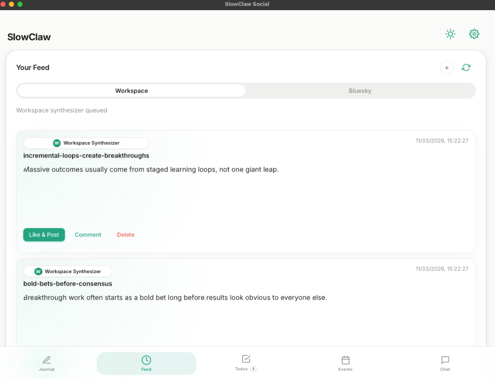
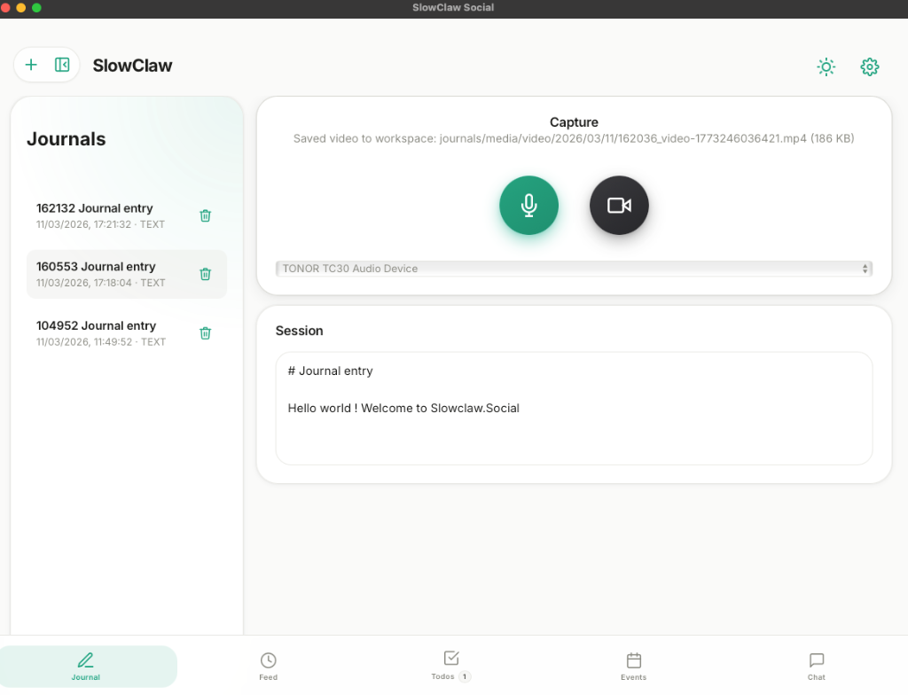

One quiet space
A minimal journal that's actually pleasant to write in. No likes, no metrics, no infinite scroll — just a calm place to think, which is where every good idea starts.
Local-first · On-device AI · No account required
SlowClaw turns voice, video, and text journals into posts, tasks, and a feed curated to your own mind. The AI runs on your device — transcribe, summarize, and draft without a single byte leaving your machine.
iPhone & Mac today · Android in progress · Open source
$ journal saved → "Morning reflection"
[CAPTURE] Voice memo imported · 2m 14s
[TRANSCRIBE] Speech.framework · 100% on-device ✓
[DRAFT] 3 social posts generated from your note
[FEED] Curating Bluesky + Nostr to your interests
[EXPORT] Nothing sent to the cloud. Ever.Phase 01 · Capture
Capture is frictionless. A quick text note, a voice memo on your commute, a clip of video — all land in one private workspace designed for reflection, not distraction.
A minimal journal that's actually pleasant to write in. No likes, no metrics, no infinite scroll — just a calm place to think, which is where every good idea starts.

Record in-app or drop in voice memos from the iOS Files and Share sheets. Transcripts appear automatically — transcribed on-device, so even your rawest thoughts stay yours.
Phase 02 · On-Device Intelligence
No API keys, no cloud round-trips, no data leaving your device. A small open model (Gemma, quantized) runs locally to transcribe, summarize, and draft — entirely offline if you want.
Pick a note and let the on-device model draft social posts, extract tasks, or draft longer pieces from your raw reflections. Keep what fits, edit what's close, discard the rest. You stay the author.
Inference happens in-process via on-device runtimes. The model never sees anyone else's data and nothing is logged to a server. Privacy isn't a setting here — it's the architecture.
Phase 03 · Curation
Your notes quietly build a picture of what you actually care about. SlowClaw ranks open social sources — Bluesky, Nostr, RSS — against your real interests instead of raw engagement.
Your private notes vectorize into a representation of what you genuinely care about — so the feed reflects your values, not your clicks.
Bring in Bluesky and Nostr, then rank them against your own artifact history — open protocols first, no closed-platform lock-in.
A draft you like becomes a post with one tap — to Bluesky, Nostr, or beyond. You decide what represents you. Capture privately, publish deliberately.
See it · Then try it
Screenshots below — but the best way to feel it is the live demo. It runs the real app right in your browser with sample data, no install.



Get it
SlowClaw ships for iPhone and Mac. Capture, transcribe, and draft on-device today.
Try the web demo →It's open source. Clone and build the full app — Rust core, Tauri host, web UI.
git clone https://github.com/zanynik/slowclaw.social
cd slowclaw.social/web && npm install
npm run tauri devThe same Rust core also runs headless as a CLI/gateway/daemon for automation.
cargo build --release
./target/release/slowclaw gatewayThe vision
More than an app, SlowClaw is a bet: that the tools we think with should be ours, private, and aligned with what we actually care about — not tuned to keep us scrolling.